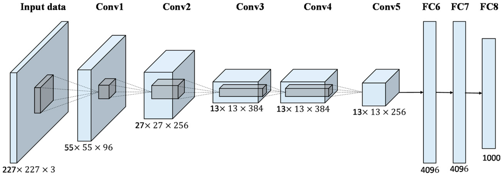
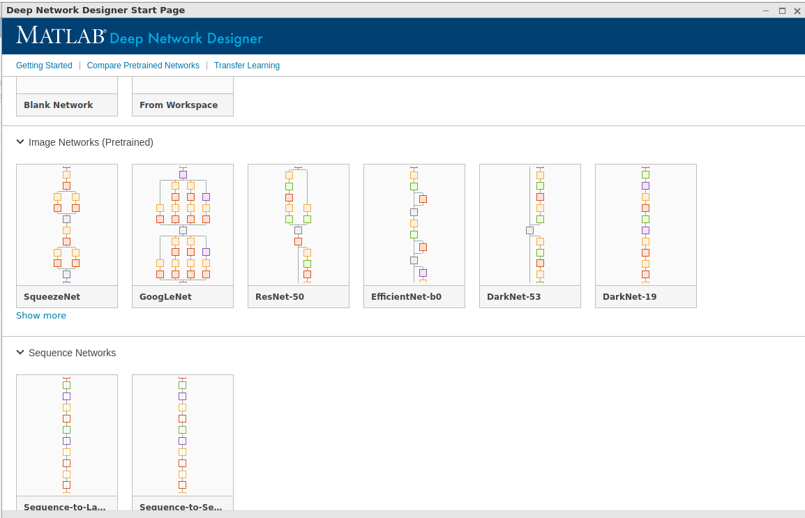

Convolutional Neural Networks (CNNs)
ML Laboratory 04
1 Objective
Students should understand and be able use some basic pretrained CNN models available in Matlab
2 CNN networks
CNNs are multilayer networks adapted for image processing, which use the convolution operation extensively.
2.1 Starting points
- The layers in a normal multilayer perceptron network (MLP) are fully-connected: each output value is a combination of all inputs
- Each full-connected layer is a full (dense) matrix
Problems:
- Images are large: 1 Mexapixel color image = 3 million values
- Fully-connected layers have huge size (the number of parameters in fully-connected layers is huge).
Example Consider a layer with input size = 300 x 300 color pixels, and output size equivalent to 150 x 150 color pixels. How many parameters does this layer have?
2.2 Convolution
DSP deja-vu vibes: \[y[n] = \sum_k x[n-k] h[k]\]
- Some videos here: a kernel with fixed coefficients \(h[k]\) is slided over the input \(x[n]\) and computes the output as a linear combination of the surrounding input samples
Key points:
Convolution has been used since ever in signal and image processing for extracting features (edges, frequency bands, etc)
Convolution is a kind of matrix multiplication, with an almost sparse matrix of a special form (“circulant” or “Toeplitz”)
Each output value depends only on the surrounding pixels
2.3 Convolutional Neural Networks
The basic unit is now a layer
The data is viewed as tensors: 3D cubes of data (like a three-dimensional matrix)
Each layer takes as input an \(M_1 \times N_1 \times C_1\) tensor and produces an output \(M_2 \times N_2 \times C_2\) tensor
We don’t think of individual neurons anymore. Each neuron in a convolutional layer does exactly the same operation as the others, with the same weights, but “sees” just one small part of the input image
2.4 Architecture of a CNN
AlexNet:
[1] Krizhevsky, Alex; Sutskever, Ilya; Hinton, Geoffrey E. (2017-05-24). “ImageNet classification with deep convolutional neural networks” (PDF). Communications of the ACM. 60 (6): 84–90. doi:10.1145/3065386. ISSN 0001-0782.

2.5 Layer types
Open the AlexNet model in Matlab and look at the architecture directly
net = alexnet('Weights','imagenet')
analyzeNetwork(net) % or double-click `net` in the WorkspaceLayer types:
- Convolutional
- Activation
- Pooling (MaxPooling)
- Fully connected (e.g. like in multilayer perceptron)
- Softmax activation to get probability-like scores (like in multilayer perceptron)
- Other optional stuff: normalization, dropout, batch normalization etc
A CNN can be viewed as a feature extractor + classificator:
- The output layers are very similar to multilayer perceptron: fully-connected layers + softmax
- The first part, with the convolution layers, is a kind of feature extractor
2.6 The model
A CNN has a fixed arcihtecture composed of several layers. For typical networks, the architecture is described in the accompanying papers.
Inputs:
- a color image represented as a tensor \(X\) of size \(L_1 \times L_2 \times 3\)
Outputs (assuming one-hot encoding):
- a vector \(\hat{y}\) which should be understood as scores/probability of belonging in each class
- the location of the maximum value gives the predicted class
2.7 The model parameters
The model parameters are the parameters of the layers:
the filter coefficients in the convolutional layers
the weights in the fully-connected layers
The number of parameters of the convolutional layers is much smaller than for fully-connected layers.
2.8 The cost function
For classification, the cross-entropy is typically used. This is exactly similar to how it is used in MLP networks.
For a single input:
\[L(y, \hat{y}) = - y_1 \log{\hat{y_1}} - \dots - y_n \log{\hat{y_n}} = -\log{\hat{y_{class}}},\]
where \(\hat{y_{class}}\) is the model’s predicted probability for the true class of the input.
For multiple inputs: do the average of all \[J = \frac{1}{N} \sum_i L(y^i, \hat{y}^i)\]
2.9 Training
Training is done with backpropagation and gradient descent (or some variant of it).
Backpropagation = the technique to compute the derivatives of \(J\) with respect to all parameters in the network.
Same story as for multilayer perceptron (MLP) networks
3 Matlab tools and functions for working with CNNs
There are lots of new functions and tools in Matlab for deep neural networks, since the last 2-3 years. There are also Matlab courses and tutorials on how to use them.
But whoever is serious on this subject should use the Python frameworks (Pytorch, Tensorflow/Keras).
3.1 Deep Network Designer

3.2 Other frameworks besides Matlab
The most used deep learning frameworks are written in Python:
- Tersorflow + Keras
- Pytorch
- …
4 Walkthroughs
We go step by step through the following Matlab examples:
- Classify Image Using GoogLeNet
- Transfer Learning with Deep Network Designer
- alternative: Transfer Learning Using AlexNet
- Create Simple Deep Learning Network for Classification
Additional links:
- DeepLearning OnRamp: https://matlabacademy.mathworks.com/details/deep-learning-onramp/deeplearning
5 Practical work
5.1 Exercise 1 - Play with pretrained networks
Load the AlexNet model with pretrained weights on the ImageNet database. Open the model and examine the architecure.
- How many parameters does the first convolutional layer have?
- How many parameters does each trainable layer have? (trainable = convolutional or fully-connected)
- What is the share of the fully-connected layers in the total number of parameters?
Compare other networks (GoogLeNet, Resnet-18, Mobile-net v2) with AlexNet:
- which has more/less layers?
- which has bigger/smaller fully-connected layers at the end?
Play with GoogLeNet/AlexNet. Download an image of a dog from the Internet and classify it. Does it work?
The ImageNet class names can be found here
For the used image, visualize the internal activations of the layers ‘conv1’, ‘conv2’, ‘fc7’ and ‘prob’ inside the network. What are their shape?
Use the following code sample:
act1 = activations(net,im,'conv1'); % Nice plotting sz = size(act1); act1 = reshape(act1,[sz(1) sz(2) 1 sz(3)]); I = imtile(mat2gray(act1),'GridSize',[8 8]); imshow(I)The sample code is taken from here: https://www.mathworks.com/help/deeplearning/ug/visualize-activations-of-a-convolutional-neural-network.html
5.2 Exercise 2 - Transfer Learning to classify Cola vs Pepsi
Use transfer learning to train AlexNet (or GoogLeNet) to classify images of Pepsi vs CocaCola beverages.
The dataset is in the file Data_PepsiCola.zip, downloaded from here: https://www.kaggle.com/datasets/die9origephit/pepsi-and-cocacola-images
- Download and unzip images, look through them
- Use the training data to train the network
- Test the results with some of the images from the dataset.
5.3 Exercise 3 - Add a new layer and retrain
In DeepNetworkDesigner, and remove one convolutional layer (+ the pooling layer after it) from the middle part of AlexNet. Retrain the whole network on the Pepsi/Cola dataset (it may take some time).
Add one extra convolutional layer (+ pooling) in the middle part of AlexNet. Retrain the whole network on the Pepsi/Cola dataset (it may take some time).
6 Final questions
TBD